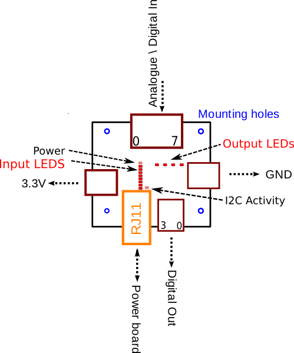
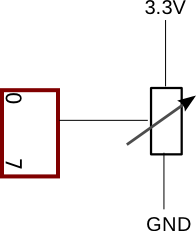
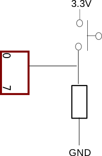

JointIO Board
Robots need sensors. Without them, they drive into walls, miss tokens, catch fire, take over the world... you get the idea. To enable your robot to get information about the immediate world around it, you are provided with the JointIO board in your kit. JointIO stands for Joint Input and Output. You can connect different types of electrical sensors to it (Inputs) and drive additional circuitry or devices (Outputs).
Board Outline

Figure 1 - Outline of JointIO Board (click full size image)
Types of Sensor
Electrical sensors fall in to two categories, analogue and digital. Analogue sensors include:
- Potentiometers (variable resistors)
- Light detectors (photo-diodes, photo-resistors)
- Sound detectors (microphones)
- Temperature sensors (thermistors, thermocouples)
Analogue sensors produce a signal which can vary in magnitude over a range of possible values. Compare this to digital sensors which can only have one of two values 1 or 0 (on/off, true/false, ...). Digital sensors include:
- Mechanical Tilt sensors
- Reed sensors
- Bump switches
- Signals from other digital electronics
Technical Specification
- There are 8 available inputs on the JointIO board
- Each input can be connected to a digital OR analogue sensor
- There are 4 available digital outputs
- There are 4 ground connections
- There are 4 power connections (3.3 Volts)
Making Connections
All connections to the JointIO board are made using the green and orange cage clamps located on all sides of the board. You will need to refer to the Board Outline before making any connections! Using a small screwdriver you can push back the orange lever on the cage clamp and insert the wire directly into the hole on the front. Release the orange lever and ensure that the wire is held tightly.
Inputs
Eight analogue inputs are provided by the JointIO Board. These are labelled 0 to 7 and can be treated as digital inputs in your code if desired. Power and ground connections are provided to enable switches and external circuits to be interfaced. Figure 2 demonstrates how a rotary potentiometer can be connected to the JointIO board to measure angular rotation.
Note: The analogue readings of the input pin assume that the input voltage range is between GND and 3.3V. If a voltage greater than 3.3V is connected, the JointIO board will still read it as 3.3V. If you have inputs which are unused i.e. not connected to anything, then their value, if read, will fluctuate randomly between 0 and 3.3Volts. To repeat that, Unconnected inputs will have random analogue values.
The logic value of these input pins are echoed onto the input LEDs on the board. This gives a visual indication of which inputs are high/low.

Figure 2 - Example analogue sensor circuit
Figure 3 shows how a simple bump switch may be connected to the JointIO board. Note that the resistor (typical values ~1k) is necessary so that when the switch is not pressed, the JointIO input is not disconnected, instead it is 'pulled' to ground. Remember, disconnected inputs have random values!

Figure 3 - Example digital sensor circuit
Outputs
Four digital outputs are provided by the JointIO Board. These are labelled 0 to 3 and may be used to trigger relays, LEDs, external logic circuits or anything else requiring a digital signal. The digital output pins will be at 3.3V (Logic 1) and GND (Logic 0). The logic value of each output pin is displayed by the output LEDs on the board. This gives a visual indication of which outputs are high/low.
Troubleshooting
The input pin value appears to be random
Most likely you are reading a pin which is not physically connected to anything and therefore it is floating. This could be because you are reading the wrong pin or because the connection to the cage clamp is loose.
The input pin value is always 3.3
The maximum input voltage to the JointIO is 3.3V, if a voltage greater than this is connected, the value read by the JointIO board will always read 3.3V.
Programming Interface
A programming interface is a set of rules explaining how you can control a specific module from within your robot's python code.
Reading Inputs
To get the analogue value of a specific input use the following command:
# INPUT_NUMBER = 0,1,..7
io.apin[INPUT_NUMBER]
This will return a real number between 0 and 3.3.
To get the digital value of a specific input use the following command:
# INPUT_NUMBER = 0,1,..7
io.pin[INPUT_NUMBER]
Note that 'apin' becomes 'pin' for digital reads.
Setting Outputs
To set one of the four output pins use the following commands:
# OUTPUT_NUMBER = 0,1,2,3
io.pin[1] = 1
# Or:
setoutput(OUTPUT_NUMBER,1)
#examples:
#set output 1 high
io.pin[1] = 1
setoutput(1, 1)
#set output 3 low
io.pin[3] = 0
setoutput(3,0)
Events
The real word is full of events which you must react to. The same is true for your robot's world. Your robot will need to react to the events when they happen, such as finding a token, hitting a wall or catching on fire. There are two ways your robot can find out that an event has occurred.
- Polling: The robot continually checks for each possible event one by one in an infinite loop until something happens.
- Yielding: The robot waits or 'yields' on a particular event. When that event occurs your robot will be interrupted but in the meantime it can get on with other tasks, like finding tokens.
A common problem is needing to wait for a bump switch to be triggered, in which case you might need to change the direction of your robot. This waiting can be achieved using the yield statement:
# our bump sensor is connected to input 0
yield io.pin[0]
The above code will cause your robot to wait until the digital value of the JointIO input pin 0 to change from its current value. Until it does, any code that follows the yield statement will not be executed. Suppose that you are only interested in when an input is at a particular value, the following code shows you how you can specify the conditions within the yield statement:
# Wait for input 3 to change digital value
yield io.pin[3]
# Wait for input 3 to become digital '1' (threshold 512)
yield io.pin[3] == 1
# Wait for input 3 reading to exceed 1V
yield io.apin[3] > 1
# Wait for input 2 reading to go below 2.5V
yield io.apin[2] < 2.5
# note analogue pins do not have the '==' operator
More complex events might occur when multiple inputs change or are in specific states. It is possible to wait on multiple input events within the same yield statement
# wait for input pin 3 to be logic 1 AND input pin 2 to be logic 0
yield (io.pin[3] == 1) & (io.pin[2] == 0)
# wait for input pin 3 to be greater than 2V AND below 3V
yield (io.apin[3] > 2) & (io.apin[3] < 3)
# wait for input pin 5 to be logic 1 OR input pin 4 to be logic 0
yield (io.pin[5] == 1) , (io.pin[4] == 0)
# wait for input pin 3 to be greater than 2V OR input 4 to be below 3V
yield (io.apin[3] > 2) , (io.apin[4] < 3)
Dealing with an event
How do you deal with an event when it happens? Well, the first step is to find out exactly what it is that has happened. This information is stored in the 'event' variable. Immediately after a yield, you can test the event variable to find out the state of the input pins when the event occurred. This information is particularly useful when you yield on multiple events as you need to identify which one has occurred.
The following code yields on two different input pins (0 & 1) and then updates two output pins such that they echo the input values. The routine is utterly pointless and could be replaced with a piece of wire, but it illustrates how to deal with an event.
#wait until either input 0 or input 1 changes value
yield io.pin[0], io.pin[1]
# event.io.pins is a list of the pins which caused the event and the yield to return
if 0 in event.io.pins:
# event.io.vals is a list of the pin values when the event happened
# e.g. event.io.vals[0] gives the value of pin 0 which triggered the event
# event.io.vals only contains pin values for the pins in yield statement
# the pin 0 event occurred, so we need to update output 0
io.pin[0] = event.io.vals[0]
elif 1 in event.io.pins:
# the pin 1 event occurred, we need to update output 1
io.pin[1] = event.io.vals[1]
When yielding on different types of events such as JointIO inputs and vision, you can use the event variable to find out which type of event occurred:
# see vision documentation for more info
yield vision(), io.pin[0]
if event == io:
# Input pin 0 triggered the event
pass
if event == vision:
# a vision event happened before input pin 0 changed
pass